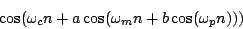

Next: Designer spectra
Up: Modulation
Previous: Phase modulation and FM
Contents
Index
- A sound has fundamental 440. How could it be ring modulated to
give a tone at 110 Hertz with only odd partials? How could you then fill in the
even ones if you wanted to?
- A sinusoid with frequency 400 and unit peak amplitude is squared. What
are the amplitudes and frequencies of the new signal's components?
- What carrier and modulation frequencies would you give a two-operator FM
instrument to give frequencies of 618, 1000, and 2618 Hertz? (This is
a prominent feature of Chowning's Stria [DJ85].)
- Two sinusoids with frequency 300 and 400 Hertz and peak amplitude
one (so RMS amplitude 0.707) are multiplied. What is the RMS
amplitude of the product?
- Suppose you wanted to make FM yet more complicated by modulating the
modulating oscillator, as in:

How, qualitatively speaking, would the spectrum differ from that of the simple
two-modulator example (Section 5.5)?
- A sinusoid at a frequency
 is ring modulated by another
sinusoid at exactly the same frequency. At what phase differences will the
DC component of the result disappear?
is ring modulated by another
sinusoid at exactly the same frequency. At what phase differences will the
DC component of the result disappear?
Next: Designer spectra
Up: Modulation
Previous: Phase modulation and FM
Contents
Index
Miller Puckette
2006-12-30